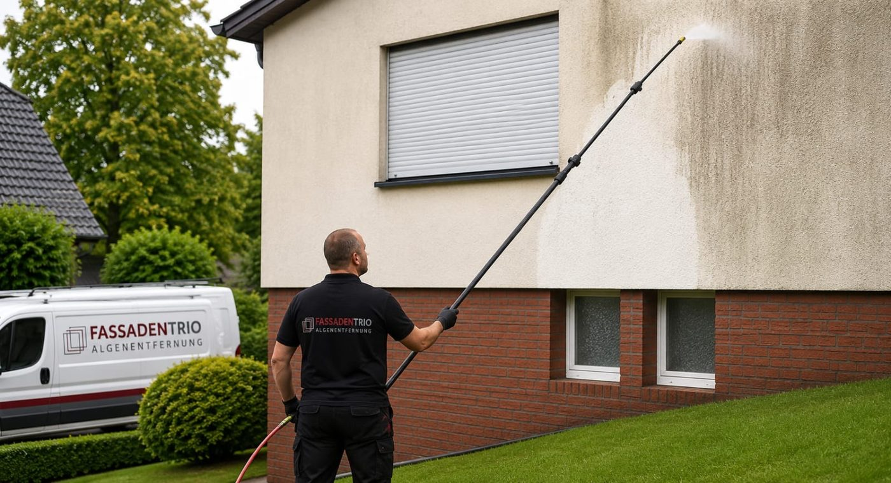
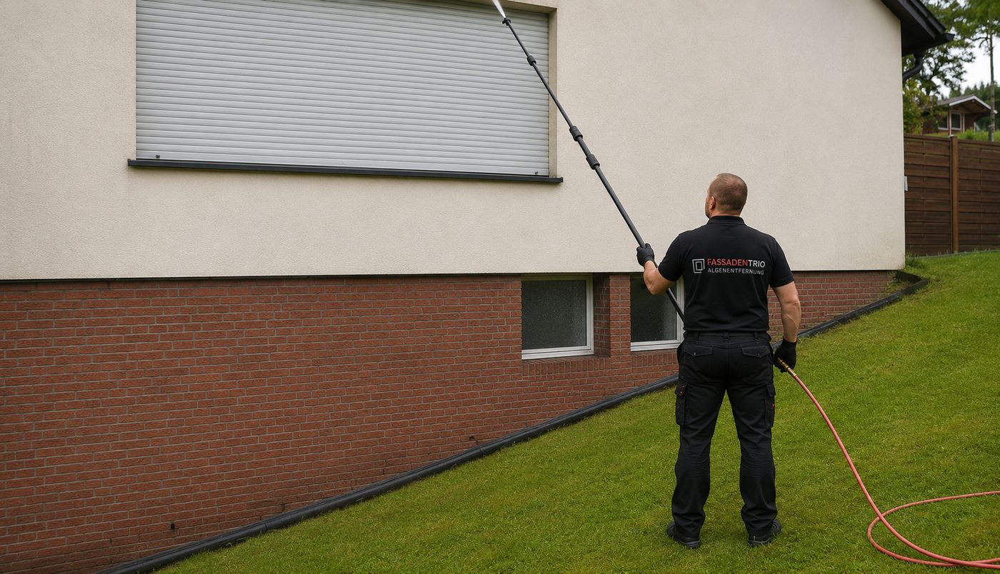
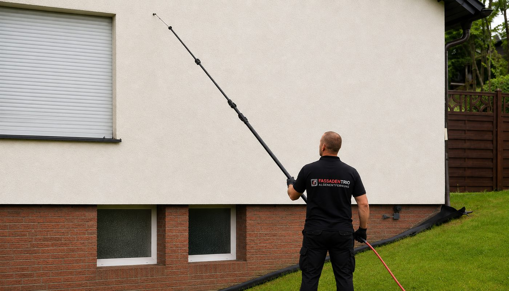

Professionelle Fassadenreinigung, deutschlandweit
Der Neuanstrich kann warten.
Wir entfernen Algen, Pilze und Schmutz mit sanftem Wasserdruck und schützen Ihre Fassade danach bis zu 5 Jahre vor neuem Befall.
Phase 1 von 3
Reinigungsmittel auftragen
Unser eigens für Fassaden entwickeltes Reinigungsmittel wird großflächig aufgetragen, mit bis zu 10 Meter langen Teleskoplanzen vom Boden aus. Ein Gerüst braucht es dafür nicht.

Phase 2 von 3
Fassade abspülen
Sobald sich Algen, Schimmel und Pilze gelöst haben, spülen wir sie mit klarem Wasser ab. Der Druck ist so niedrig, dass der Putz unbeschädigt bleibt.

Phase 3 von 3
Langzeitschutz auftragen
Der transparente Schutz dringt porentief ein und verzögert neuen Befall, garantiert bis zu 5 Jahre. Er lässt sich jederzeit erneuern.

Ergebnis
Wie am ersten Tag. Ohne neue Farbe.
Bis zu 70 % günstiger als ein Neuanstrich, mit 5 Jahren Garantie vor Wiederbefall.
Das Haus ist ein 3D-Modell. Fotos echter Einsätze folgen direkt darunter.